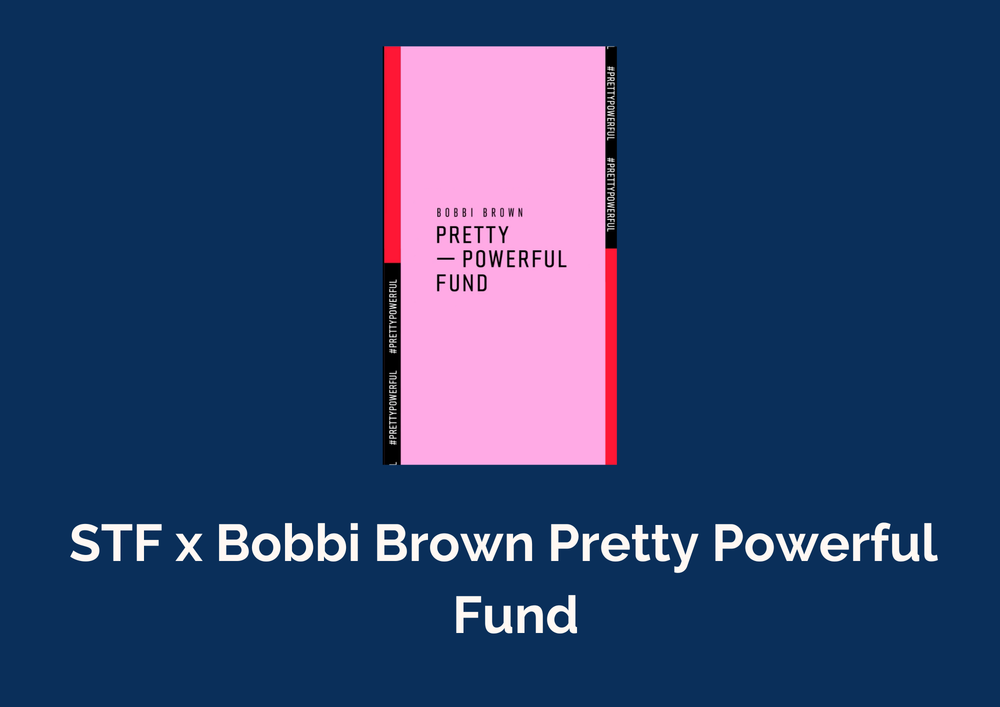
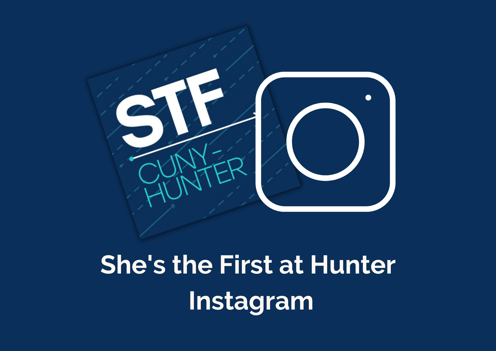

Back in high school during 2018, where I majored in art, I would create and showcase my paintings to spread awareness on issues that I knew weren’t getting enough attention. One of the issues I focused on was children not having access to education. While doing my own personal research, I came across She’s the First and was immediately inspired by the organization itself. I always knew I would be part of a chapter whichever college I ended up attending; however, I took sometime to focus on myself in the beginning of college to figure out where my passions lie and how I intend to use my skills that I would develop to make a change. When I was ready to engage in student activities including being part of a STF Chapter at Hunter, I realized that my college didn’t have a STF chapter to begin with. So I pitched the idea of starting a new chapter to my friend and now co-founder of STF Hunter, Faria Haq! By the time we got to it, the pandemic had hit but we still pursued the establishment of creating a chapter here at Hunter! Since then, I became the Vice-President where I came up with event ideas with our President, Faria! We welcomed additional board members on the team, and had led events, and brainstormed creative social media posts/challenges to keep our members engaged. We mostly hosted numerous virtual events from game day fundraising to important discussion events! As I’m coming close to graduation, I think about my journey with She’s the First and how far I’ve grown with it. It genuinely warms my heart thinking I gave it my all to make sure we made a tiny difference in the community and how this is just the beginning of my contribution in supporting She’s the First!
 